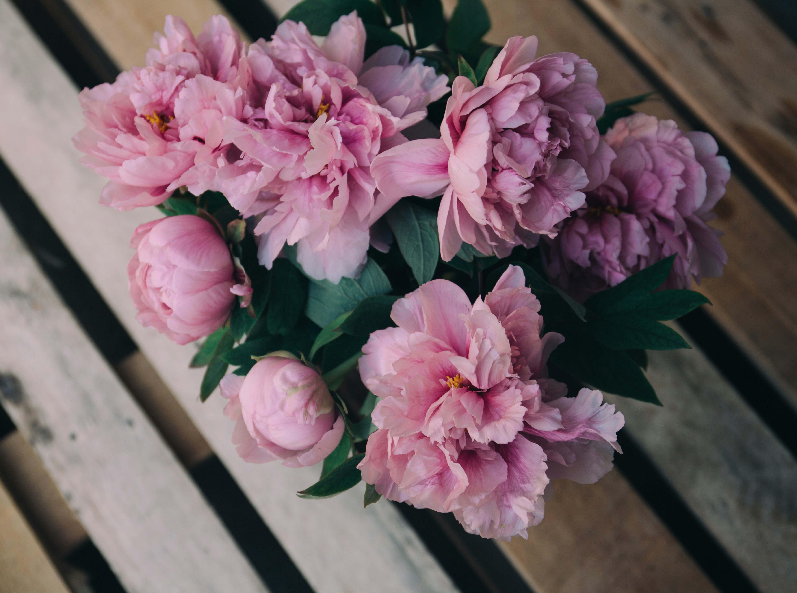

10 Tips for Keeping Your Flowers Fresh
Keeping your flowers fresh for as long as possible is easier than you think. Here are 10 tips to help you extend the life of your blooms...
Read MoreKeeping your flowers fresh for as long as possible is easier than you think. Here are 10 tips to help you extend the life of your blooms...
Read MoreDifferent flowers thrive in different seasons. Discover the best flowers to buy or plant during spring, summer, fall, and winter...
Read MoreChoosing the perfect bouquet can be overwhelming. Here’s a guide to help you pick the right flowers for any occasion...
Read More